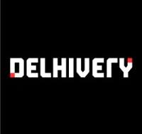

Abhishek Puppala
Data Science major at University of North Texas. Possesses 2 years of experience in the AWS development field. Hardworking individual who thrives in diverse, fast-paced environments and values group collaboration in a professional setting. Seeking a position as a software developer or Data Scientist, where I can use my skills to the advantage of the company, while having the scope to upgrade my skills.
Download ResumeEducation
University Of North Texas, Texas, USA
Masters in Data Science — GPA: 3.75 (Aug. 2022 – May 2024)
B V Raju Institute Of Technology, Hyderabad, India
Bachelors in Computer Science — GPA: 9.5/10 (July. 2017 – May 2021)
Technical Skills
- Languages C, C++, Java, Python, SQL
- DevOps Tools: Lambda, Elastic Search, CloudWatch, Jenkins, UCD, s3, DynamoDB, Github, Bitbucket, JFrog, Nexus, fortify, devtron.
- Programming skills: Object-Oriented analysis Design, Functional Programming, Data Structures and Algorithms
- Core skills: Data science, Machine learning, Data mining, Web scraping, Networking, RDBMS
- Frameworks/Libraries: Mesa, Pandas, Numpy, Scikit learn, TensorFlow, PyTorch
- Tools: PowerBI, JupyterNoteBook, PyCharm, Microsoft Office, Microsoft Excel, Putty, RapidMiner, SAS
- Machine Learning: SVM, RandomForest, LinearRegression, LogisticRegression, DecisionTree, Clustering, KNN, Boosting, NaiveBayes
- Neural Networks: Convolutional Neural Networks, ANN
- Front End: HTML, CSS, JavaScript
Professional Experience
Software Developer (April 2021 – August 2022)
Delhivery Pvt Ltd, Hyderabad, India
- Developed a backend WhatsApp notification manager for multiple services using Python modules and libraries such as requests to fetch the info from clients.
- Utilized multitasking abilities to migrate huge client user data of CSV file type into the system database of DynamoDB into various tables and s3 buckets by dividing the data into batches.
- Designed a lambda function for payments service, enabling various kinds of validation checks before the client performs any payment activity.
- Resolved production issues by proposing optimized solutions using root cause analysis and monitoring CloudWatch logs.
- Handled various production deployment activities using Jenkins pipelines and Urban Code Deployment.
- Developed various new pipelines using Jenkins templates by creating various jobs such as build, creating snapshots, and then performing deployment activities.
- Enabled and ran various scans such as SAST, DAST, SCA, and container for each pipeline by adding and passing the parameters through scans API.
- Created new applications using application events with the help of Urban Code Deployment and configured their following component activities with the AWS environment.
- Designed UCD deployment process for each component by installing and configuring the agents under application resources.
- Generated the system payment invoices ledger sheet by uploading the sheet of data into the s3 bucket and fetching the data using the Elastic Search API.
- Migrated the GitHub code to on-prem servers and triggered application through Tomcat servers.
- Updated the company payments invoice front end template for the new application according to the requirements using HTML and CSS.
Projects
Customer Segmentation using K-means and DBSCAN | A comparative study, UNT
Developed 2 different unsupervised models to find better model performance among both of them, based on silhouette score using RFM (Recency, Frequency, Monetary) analysis.
Source CodeBasic Voice Assistant
Designed a basic voice assistant using Python text-to-speech and speech recognition algorithms, which helps the program recognize voice and perform tasks automatically.
Source CodeMesa based Covid-19 model
Built a graphical representation of how fast Covid-19 is being spread based on metrics such as distance, mask usage, quarantine, etc., using Python Mesa programming and various agents.
Source CodeCountry Image Evaluation using Sentiment Analysis
Analyzed the image evaluation of China before and after Covid-19 based on Twitter data, using algorithms like the BERT model and topic modeling.
Source CodeHotel Management DB
Created a database system to store customer information with 8 tables, 15 instances for each table, updates, and select queries for analysis.
Source CodeULFS System | University Lost and Found System
Developed a web application for reporting lost items using Django for backend, Python for programming, and HTML, CSS, and JavaScript for front-end.
Source CodeCricket Umpire Gesture Image Recognition
Built an ML application to predict umpire gestures in cricket using classification and deep learning models like Random Forest, KNN, AlexNet, and ResNet.
Source CodeSample ChatBot Application
Developed a chatbot application using Django framework, NLP, and Wikipedia for backend, with OTP authentication for user registration.
Source Code